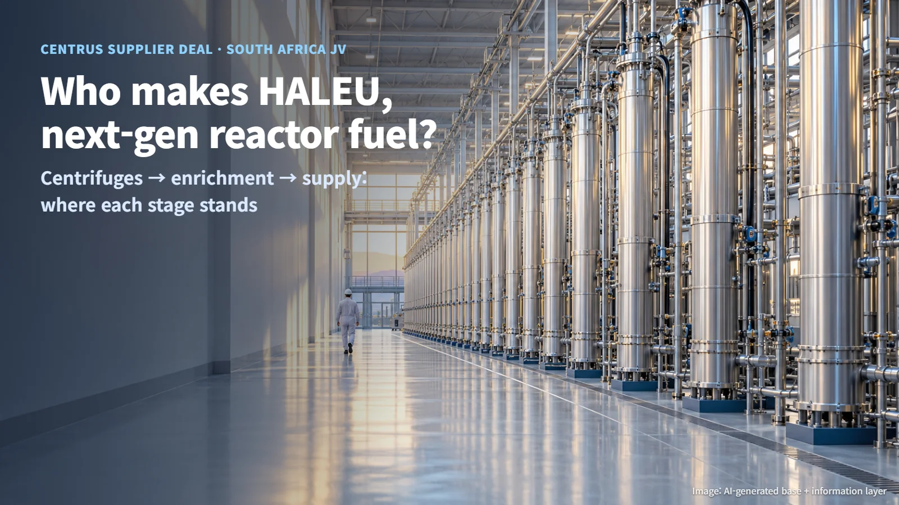
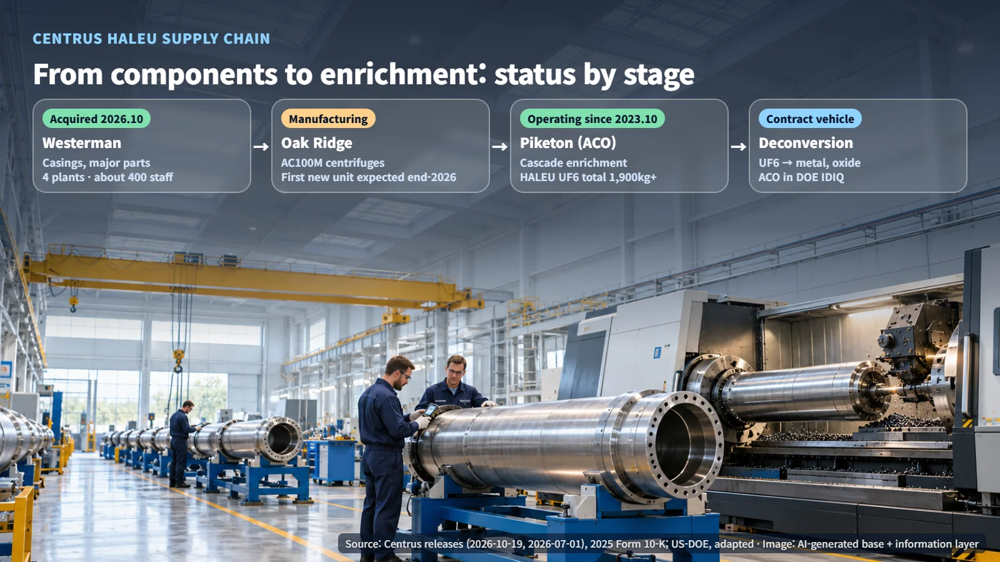
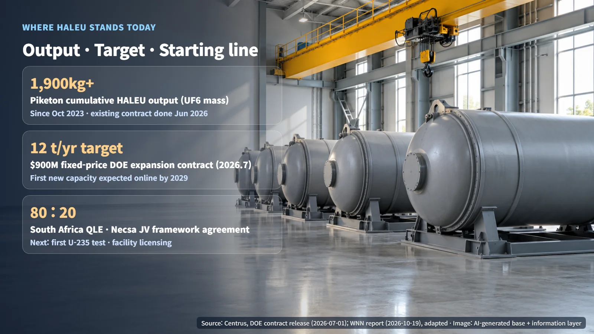

United States · South Africa · HALEU Fuel
Who Makes HALEU, the Fuel for Next-Generation Reactors? Centrus Buys a Key Supplier and South Africa Forms a Joint Venture
Centrus brings its centrifuge casing supplier in-house as it expands HALEU enrichment, while a South African joint venture sets out from a pilot facility at Pelindaba.
News about small modular reactors (SMRs) tends to raise a simple question: where will the fuel for these reactors come from? Many next-generation designs plan to run on HALEU (high-assay low-enriched uranium), and the supply chain for this fuel is being built right now. Two announcements on October 19, 2026, one from the United States and one from South Africa, offer a clear view of where HALEU is made, in what quantities, and at what stage each effort stands.

Why the HALEU Supply Chain Is in the Spotlight
Natural uranium contains only a tiny share of U-235, the isotope that splits most readily. Raising that share is called enrichment, and HALEU is enriched to a higher U-235 level than conventional reactor fuel. Next-generation reactor designs that aim to run for long periods with a compact core are the ones seeking this fuel.
Enrichment uses centrifuges. Uranium is converted into a gas, uranium hexafluoride (UF6), and fed into cylinders spinning at high speed, where the slightly lighter gas carrying U-235 gradually separates from the heavier gas. A chain of many centrifuges linked together is called a cascade. That is why the supply chain only works when a centrifuge factory, an enrichment plant and component suppliers move together. In the United States, the company running this chain is Centrus.
From the Centrifuge Factory to the Enrichment Cascade
Centrus's supply chain rests on two hubs. In Oak Ridge, Tennessee, the company builds AC100M centrifuges in a 440,000-square-foot manufacturing facility it owns on a 72-acre site. In Piketon, Ohio, its wholly owned subsidiary ACO leases a facility owned by the US Department of Energy (DOE), where it installs cascades and operates enrichment. Centrifuges built in Oak Ridge stand in rows inside the Piketon enrichment building to form a cascade.

Piketon began HALEU enrichment in October 2023 and made its first delivery to DOE that November. In mid-June 2026 it produced the final 900 kg under the existing contract, bringing cumulative output to more than 1,900 kg. These figures refer to the mass of the material in UF6 form.
The next step is expansion. On July 1, 2026, Centrus finalized a $900 million fixed-price HALEU expansion contract with DOE; adding DOE's optional purchases of up to $170 million at its discretion brings the total to $1.07 billion. The initial expansion targets a production capacity of 12 tonnes of HALEU per year plus the capacity to fulfill LEU contracts, and the first new capacity is expected to come online by 2029. Scale and sequencing will follow demand and available capital.
For the expansion, Fluor supports engineering, procurement and construction management (EPC), while Geiger handles on-site construction. On April 16, 2026, ACO signed a time-and-materials contract with Geiger running through January 30, 2031, with a ceiling of $900 million. The DOE contract and the Geiger contract share the same headline figure, yet they are separate agreements with different parties, scope and payment terms.
On the manufacturing side, domestic centrifuge manufacturing began in December 2025, and the first new centrifuge from Oak Ridge is expected to be completed by the end of 2026. In January 2026, Centrus announced a plan to move to high-volume manufacturing over the coming years, involving more than $560 million in investment and about 430 jobs, and supporting thousands of centrifuges. Moving the existing cascade to private commercial operation is the company's stated intention and is under discussion with DOE. For deconversion, the step after enrichment that turns UF6 into metal, oxide and other forms used to fabricate fuel, several companies including ACO take part in DOE's IDIQ contract.
Bringing a Key Component Supplier In-House: The Westerman Acquisition
On October 19, 2026, Centrus announced that it had completed the acquisition of Westerman Holdings, a long-standing key supplier. The total consideration was about $116 million: $95 million in cash and $21 million in stock. Westerman has supplied centrifuge casings, the outer body of the machine, along with major components. It has about 400 employees, four manufacturing facilities in Ohio, Oklahoma and Wyoming, and other industrial manufacturing businesses such as UF6 cylinders. Westerman becomes a subsidiary and keeps its brand, and its current chief executive is expected to serve as president of Westerman and as a vice president of Centrus.
With this deal, ownership and management of casings and major components that were previously sourced from outside now sit inside the company. Casings from Westerman's plants and centrifuge manufacturing in Oak Ridge come under the management of a single company. Results will show up over time in applying the same drawings and inspection standards, delivery schedules, yields and organizational integration.
South Africa's Joint Venture at the Starting Line
On the same day, World Nuclear News (WNN) reported on South Africa (the original ASP Isotopes announcement was dated October 15). QLE and South Africa's Necsa signed a framework agreement for a HALEU production joint venture at Pelindaba. It is a binding commercial framework for developing, financing, building, commissioning, owning and operating both a pilot facility and a commercial-scale plant. QLE holds about 80% and leads operations and capital raising, while Necsa holds about 20% and provides site access, safeguards and licensing support.
The company said it is refurbishing existing pilot-facility infrastructure and has secured an offtake agreement with TerraPower for future production. Refurbishing the pilot facility at Pelindaba marks the starting line today. According to the original announcement, the next step is the first test applying the company's enrichment technology to U-235, and tests that go beyond the activities scheduled under the Necsa service agreement will require the relevant permits. Forming the joint-venture company, licensing the facility and financing the commercial plant follow after that. The public materials give no start date for actual production.

Placed side by side, the two announcements show where HALEU fuel stands today. The United States is building an expansion contract and in-house component supply on top of a production track record, while South Africa has set up a commercial framework first and now faces technology demonstration and licensing. Following the fuel's progress alongside SMR news gives a clearer picture of how fast next-generation nuclear power is really moving.